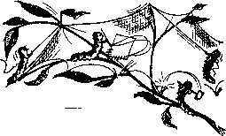

The Trinity—Mystery or Falsehood?
FJAG F-: E3
The Road to Degradation
F’ZKGE IO
Insect Architects at Work
PAGE IE
Why a Fever?
I-VXOFE EO
SEPTEMBER 22, 1962
THE MISSION OF THIS JOURNAL
Newt sources that1 are able to keep you awoke to the vital issue*. Mt aur time* must be unfettered by censorship and selfish interests. “Awakel" has no fetters. It recognizes facts* faces facts, is free to publish facts. It Is not bound by political ambitions or obligations; it is unhampered by advertisers whose toes must not be trodden on; It is unprejudiced by traditional creeds. This Journal keeps itself free that It may speak freely to you. But It doos not abuse its freedom. It maintains Integrity to truth.
“Awake!” uses the regular news channels, but Is not dependent on them. Its own correspondents ore on all continents, In scores of nations. From the four corners of the eorth their uncensored, on-the-scenes reports come to you through these columns. This Journal's viewpoint is not narrow, but is international, it is read in many nations, in mony languages, by persons of all ages. Through its pages many fields of knowledge pass in review—government, commerce, religion, history, geography, science, social conditions, natural wonders—why, its coverage is as broad as the earth and as high as the heovens.
“Awoke!” pledges itself to righteous principles, to exposing hidden foes and subtle dangers, to championing freedom for all, to comforting mourners and strengthening those disheartened by the failures of o delinquent world, reflecting sure hope for the establishment of a righteous New World.
Get acquainted with "Awakel” Keep awake by reading "Awakel"
PUBLISHED SIMULTANEOUSLY IN THE UNITED STATES BY THE WATCHTOWER BIBLE AND TRACT SOCIETY OF NEW YORK, INC. 117 Adams Street Brooklyn 1, N.Y., U.S.A.
and in England by WATCH TOWER BIBLE AND TRACT SOCIETY Watch Tower House, The Ridgeway London N.W. 7, England
N. H. Knobr, President Grant Sutter. Secretary
Printing this issue: 3,600,000 4d
“ Awake!'" It published In the following 25 tannages: Sen I monthly—Afrikaans, Clnyanja, Danish, Dutch, English,. Finnish, French, Garman, Greek, Italian, Japanese, Norwvlan, Portuguese, Spanish, Swedish, Tagalog, Zulu. Monthly—Cebu-Visayan, Chinese, Ilocano, Korean, Malayalam, Polish, Tamil, Ukrainian.
Yearly subscription rales Offices for eemimcnlhly editions
America, U.S., 117 Adam& St,, Brooklyn 1, N.Y. $1 Aurtratla, 11 Beresford Bd.. Slrathfield, N.g.W.
Canada, 150 Bridgeland Ave., Tamoto 19, Out.
England, Watch Tower House,
New Inland, 621 New North Rd.. Auckland, S.W. 1
Baath Afrloa, Private Bag, Elandsfontein, Tvl,
Monthly editions cost half the above rates.
copy (Australia, 5d; South Africa, 3>/ao) ReMltUnoet for suboeripUons should be eent to the rfflce In your country. Otherwise send your remittance to London. Notice of expiration is sent at least two Issues before subscription expired,
CHANGES OF ADDRESS should reach is thirty days before your moving date. Give vs your old and new address (If pomHiIo, your old address label). Write Watch Tower, Watch Tow< Hnsa, The Ridgeway, Londa it N.W. 7, England,
Entered as second-claes matter at Brooklyn, N.Y. Printed In England
The Bible translation «eed la “Awake!” h the
New World Translation of the Holy Scriptures, 1961 edition.
|
When other translations arc |
used |
the following symbols will |
appear |
behind the citations: | |
|
AS |
- American Standard Version |
Dy |
— Catholic Douay version |
Mo |
- James Moffatt's version |
|
AT |
- An American Translation |
£D |
~ The Emphatic Diaglott |
Ro |
- J. B. Rotherham’s version |
|
AV |
- Authorised Version (1611) |
JP |
- Jewish Publication 8oc. |
RS |
- Revised Standard Version |
|
Da |
-J. N, Darby's veralon |
Le |
— Isaac Looser’s version |
Y0 |
- Robert Young’.'; version |
CONTENTS
Th* Trinity—Mystery or Falsehood?
"Your Word Is Truth”
‘This Generation Will Not Pass’
Watching the World
IT APPEARS such a little thing. One might hardly think it would matter^—merely to give a sincere expression of thanks for kindnesses or favors rendered. Yet it matters so much. Just as a pinch of salt or spice may be all that is needed to turn a tasteless meal into a delectable feast, so genuine warmth and friendliness expressed to one that does you a favor can make for a relationship more precious than any meal.
Because it appears such a small thing it is so easy to forget or neglect to voice appreciation. Such negligence is ingratitude. If persisted in, it can eventually ruin pleasant relations between individuals, and, in the end, lead to disaster. It can make one abhorrent to others. Shakespeare said: “I hate ingratitude more in a man than lying, vainness, babbling drunkenness, or any taint of vice whose strong corruption inhabits our frail blood.”
Ingratitude can also make one abhorrent to God. Writing to the Romans, the apostle Paul described such ungrateful ones: “Although they knew God, they did not glorify him as God nor did they thank him, but they became empty-headed In their reasonings and their unintelligent heart became darkened.” This unthankful attitude was forecast as a feature to mark this world in these last days, and it is because of this attitude that this world faces a disastrous end at God’s hands. So in order to assure pleasant relations with others, especially with God, one will want to develop an appreciative and thankful attitude.
CAN MEAN
Ouch
—Rom. 1:21; 2 Tim. 3:2.
It will take effort to develop such an attitude, for gratitude, like love, is a fruit of great cultivation. Oh, it may be natural to express thanks and appreciation when obvious gifts or kindnesses are extended, but if one will stop and think he will realize that there are many things that are received from others every day. Do you express appreciation for these? Gratitude for such things can do much to strengthen ties of friendship.
Marriages could be so much more pleasant, and there would be fewer difficulties, if the partners would remember to express gratitude. Daily each in some way serves the interests of the other. Because of the frequency of the service, or perhaps because of having the feeling that one’s partner is only doing what he is obligated to do, neither may let the other know how much he appreciates the efforts of the other. But how pleasant it is to hear words ot appreciation ana tnanKS irom a ioveu one! What a stimulation it is to continue to be pleasing in that one’s sight! Frequent expressions of gratitude will make life so much more meaningful and pleasant
However, it takes cultivation to develop such an attitude of appreciation and thankfulness. It is so easy to forget benefits received from others, and therefore fail to acknowledge them. W. H. Hudson, the naturalist, once told how he was moved to remember the efforts of his wife: “One evening I brought home a friend to share our usual evening repast. Afterward he said to me, ‘You are fortunate to have a wife who, despite ill health and children to look after, cooks such excellent meals.’ That tribute opened my eyes and taught me to show gratitude for my wife’s dayto-day heroism, which I had hitherto taken for granted.’’
Especially when favors are repeated many times is there a tendency to lose appreciation for them and take them for granted. Some regularly receive transportation in another’s car, repeatedly use the equipment of someone else, such as the telephone, or have their children looked after by others. Ingratitude for such services, even though the one receiving them may be in need, can result in ill feelings and eventually ruin friendships. The Israelites in the wilderness, for example, lost appreciation for the miraculously provided manna, which they received from God regularly. Their ingratitude ruined their relations with God.—Num. 11:4-6; 21:5.
So guard against ingratitude by seeking opportunities to express your gratefulness. Let it be a heartfelt expression, not perfunctory, not said merely because it is good etiquette, but because you really do appreciate the other person’s consideration, even mougn it may oe small, everytime someone passes the food, pours your coffee, opens the door for you, or does any of the many other little kindnesses, there is an opportunity to express your gratefulness. It will make others feel that they are appreciated and will encourage them to continue to show consideration, which may be for your lasting welfare.
On one occasion a young man was interviewed by the vice-president of a large corporation. Afterward he took the time to write an expression of thanks for the time and consideration shown him. The impressed vice-president remarked: “It’s so rare these days for anyone to acknowledge a little time and interest shown that I decided so courteous and thoughtful a young man was worth hiring.”
A person who is alert to express gratitude will not only win the favor of his fellowman but be pleasing to God. When he breathes the tangy air, eats the wide variety of delicious foods, is stimulated by a gorgeous sunset, or enjoys any of the other multitudinous benefits proceeding from the hand of God, he will not unap-preciatively take them for granted as so many do today, but with heartfelt thanks will daily express appreciation to his Creator. His prayerful attitude will be the same as that of faithful David: “Bless Jehovah, O my soul, and do not forget all his doings.”—Ps. 103:2,
Cultivate such a thankful attitude. It will be to your everlasting welfare, for not only will it make life more pleasant now, but it will assure you survival when God brings this world of ingrates to a disastrous end. “The one offering thanksgiving as his sacrifice is the one that glorifies” God; and Jehovah assures, “I will cause him to see salvation.”—Ps. 50:23.
PIERRE and his little son Jeannot passed the church in a typical French town. Pierre pointed to the image of Jesus over the church’s door, and said to his son: Look, Jeannot, that’s the Good God.13 Was Pierre right?
For centuries a black crucifix in the cathedral at Saint Flour, in France’s Haute Auvergne, has been called “The Good Black God.”
Is it correct to call Jesus God, instead of God’s Son?
From their earliest youth faithful Catholics remember definitions like the one from a booklet for six-year-olds, which says “that there are three persons in God . . . but that they make only one God. . . . The Father is not greater than the Son. . . . The Father is not older than the Son. The Father, the Son and the Holy Spirit do not have an age because they have always existed.’’1
Protestants often are much less conscious of the Trinity doctrine, yet this is a basic doctrine of Protestant confessions too.
Could such a widely accepted doctrine possibly be wrong?
The answer is of utmost importance to you. The Holy Scriptures say that the Father, who reveals himself in the Bible by the name Jehovah, does not approve of any created thing’s being put before Him or made equal with him. This is only logical. We owe Him our very existence, and he has the right to demand the “exclusive devotion” of which the Bible so frequently speaks.
Le Bon Dieu Noir
—Ex. 20:5; Deut. 5:9; 6:15.
Satan, however, set
about to turn all men away from this simple, pure worship of the only true God. He wanted to turn men toward the worship of any other thing. He persuaded some men to worship the sun and the stars. He turned some toward the worship of idols. In other places (as in Communist lands
today) he replaced the worship of the true God with the worship of the political state.
How subtle it would be if he could also persuade those who thought they were worshiping the true God to give a part of their worship to a created thing! Is it possible that such a thing happened in Christendom’s churches?
Probably your first thought is that such a thing is not possible. But ask yourself: “How much do I hear about ‘God the Father3? Have I heard more about him during the past month than about the Son?” Yet the very word “son” implies someone who came after and owes his life to the Father.
The Holy Scriptures, read in all of Christendom’s churches, do not at all say that “the Father, the Son, and the Holy Spirit do not have an age because they have always existed.” Instead, they call Jesus “the beginning of the creation by God,” and "the prat-Dom of all creation,” If the idea that the spirit creature who became Jesus was the first one that God created sounds strange to you, read it in your own Bible at Revelation chapter 3, verse 14, and Colossians chapter 1, verse 15.
Those words were written under the inspiration of God by two of Jesus’ own apostles. They are basic truths that must be accepted by anyone who claims to follow Christ. Since they say Jesus was the "beginning” of God’s creation, he had an origin, a time when he came into being, when he was created or begotten. Thus, those who accept the Holy Scriptures must reject the idea that "the Father is not older than the Son” as being absolutely false.
Though it may amaze you, the early Christians did not teach that Jesus was equal with his Father, A French Jesuit, Th. de Regnon, explained in a long study on the Trinity doctrine: “The first Christians attributed the name of God especially to the first person.”2 Thus, when they said "God” they meant the Father, not the Son.
This Catholic authority added: “In pronouncing the great word ‘God,’ if the sentence did not change the meaning, one directed his thought toward the first person of the Holy Trinity. Where one reads the most accurate writers, an Irenteus or a Hilary, one constantly recognizes this process.”8 Thus, among early writers, as In the Bible, the word “God” meant, not a Trinity, but the Father, as distinguished from the Son,
You can find specific examples of this in many places, Justin Martyr referred to the Word, who became Jesus, as “another God and Lord under the Creator of all things; ne aiso is caiieq angei oecause ne announces to men all that the Creator of all things, over whom there is no other God, wants to announce to them.”*
Thia is not the only time this early Catholic “father” spoke of Jesus as being “under,” and thus inferior to, the Creator of all things. In his first Apology Justin referred to “Jesus Christ who was crucified under Pontius Pilate, governor of Judea, in the time of Tiberius Caesar, in whom we see the son of the true God and whom we put in the second position, and, in third position the prophetic spirit.”5
Justin saw no equality between Jesus and his Father, or between the two and the holy spirit. To him Jesus was the "son of the true God” and in “second position.” How different were his statements, which harmonize with those in the Gospels and other inspired Bible writings, from the Trinity doctrine, taught by modern religions, that "these three persons are equal in all things, because each one is God.”8
A. W. F. Blunt commented on this in the Cambridge edition of Justin’s Apologies. His summary of Justin’s view conforms to the Biblical truth that the Logos, who became Jesus, is superior to all other creatures, yet inferior to the One Unique GOD. He says:
“The Logos therefore, according to Justin's theology, is God’s Creative Word and the Divine Reason, the first-begotten of God, God’s agent in creation and His instrument In pre-Christian theophanies, the source of all human truth and goodness; He is quantitatively diverse from the Father [therefore not of the same ‘substance* as God, as trinltarians claim], and is sometimes represented as subordinate to Him; but at the same time he is regarded as the only and absolute Son of God, in a sense in which that title can be applied to no other person, for He is begotten, not created.”7
Further, Antoine Dupin wrote In the Revue d’Jfistoire et de LAttdrature Reli-gieuees (Review of Religious History and Literature) that in the early days of Christianity “one believed in the Father, In the Son and in the Holy Spirit, but no tie was available to unite them together. They were mentioned separately. Prayers were addressed, for example, to the Father who alone,' according to the statement of Clement of Rome, ‘was God.’ ”*
Louis R4au, professor of the history of the art of the Middle Ages at the Sorbonne, France’s leading university, wrote that not only is there no question of the Trinity doctrine in the part of the Sacred Scriptures that were written before Jesus’ time, but that “one can even say that it is a conception foreign to primitive Christianity,”*
Perhaps you had assumed that this doctrine was taught by Jesus Christ, and that he is the one who explained it—hut not 90. The word “trinity" does not exist in the Holy Scriptures—it is not found even once in any part of the Bible, nor does Jesus or any of his apostles make any explanation of it. The Catholic Encyclopedia, Volume 15, page 47, says the Greek word for trinity “is first found in Theophilus of Antioch about A.D. 180,” or nearly a century and a half after Jesus’ death!
It is impossible to believe that, if such a doctrine were true, Jesus would not have explained, discussed, or even mentioned it. This is especially true in view of the fact that his preaching was to Jews, who would have considered any such doctrine a denial of their proper belief in one God, as is evidenced by their rejection of the Trinity doctrine to this very day.
The striking lack of any reference to, or explanation of this doctrine in the words of Jesus—or for that matter, in the Gospels and letters of Jesus' apostles and disciples—is a strong evidence that this doctrine, which was, known tn pagan religions, is a false and flagrant addition to his teachings.
“But,” you protest, “there must be some Scriptural support for such a widely accepted doctrine.”
In an attempt to find Biblical support for it trinltarians seize upon any use of the words Father, Son and holy spirit In the same text—as if the mere mention of three names together proves that the three compose only one God,
The Catholic Encyclopedia, for example, says: “The evidence from the Gospels culminates in the baptismal commission” of Matthew 28:19, 20, That text says: “Go therefore and make disciples of people of all the nations, baptizing them in the name of the Father and of the Son and of the holy spirit.”
1 Do you see the “culmination" there of the Scriptural “evidence" of the Trinity? There is nothing in that verse that say> the three compose God, or that they are coequal, or that they are coetemal. Nothing there says the Father is not older than the Son, or that the holy spirit is equal with the Father, or that any other part of the Trinity doctrine is true. Yet this text is presented as the “culmination” of the Scriptural “evidence” in support of this doctrine!
The French Roman Catholic Encyclo-pddie Thtologique (Theological Encyclopedia), Volume 35, cites 1 John 5:7 as a further argument for the Trinity. This text does say, “These three are one," but both Catholic and Protestant translators now recognize those words as being spurious. They are an addition a copyist insert, ed long after John’s time. Thus the Catholic translation by the ficole Blblique (Biblical School) of Jerusalem omits this verse as being no part of the inspired
Scriptures, and explains in a footnote: It is “absent from the ancient Greek manuscripts, from the old versions and the best manuscripts of the Vulgate, and that seems to be a marginal note later inserted in the text.”
One text remains, John 1:1, 2: “In the beginning was the Word: and the Word was with God: and the Word was God. The same was in the beginning with God.” —Catholic Dmtay Version.
The Word here refers to Jesus in his prehuman existence. Thus, on first reading —at least in the translation given here —this verse seems clearly to say that the spirit creature who became Jesus was God.
But not all translators agree with this rendering of the original Greek text in which the apostle John wrote those words. The Greek has an article before the word “God" when it refers to the Father, and does not have the article when it refers to Jesus. In Greek this difference is very important, and translators who put accuracy of translation ahead of their preconceived ideas about the Trinity recognize that this difference changes the entire meaning.
Thus, translators of La Bible du Cente-navre (The Centenary Bible) render this passage: “In the beginning was the Word. The Word was near God, and the Word was a divine being. He was in the beginning near God.” No one would argue that this more accurate translation supports the Trinity doctrine. In fact, it does just the opposite. It shows the distinction that exists between the Word, who was “near God,” and GOD himself.1
So, the image to which Pierre pointed and the crucifix at Saint Flour do not represent the Almighty God, who is almost a forgotten person in Christendom due to the doctrine of the Trinity. Instead, they represent His first creation, called the Word, or, in Greek, Logos, who became the man Jesus. Further, the children who are told that the ‘Soh does not have an age because he has always existed' -are being taught a doctrine that is exactly the opposite of what the Holy Scriptures say.
The Holy Scriptures, the inspired Word of God, do not say Jesus was, or is, a part of the Almighty. Instead, they call him God’s “only-begotten Son.”—John 3:16.
They do not say Jesus was “the Supreme God made man.” Instead, they say he called his Father “my God and your God.” —John 20:17.
They do not say that the “Fattier is not greater than the Son,” but, instead, they say “the head of Christ is God.”—1 Cor. 11:3.
The apostles, entirely unlike modern trinitarians, regularly made this specific distinction between GOD, the Father, and the Son. Dupin says: “When one reads Saint Paul, one is struck with the care he took to reserve for the Father the title of God.”10 An outstanding example is found in the apostle’s first letter to the Corinthians, chapter 8, verse 6: “There is actually to us one God the Father, out of whom all things are, and we for him; and there is one Lord, Jesus Christ, through whom all things are, and we through him.”
Who is GOD? Read that verse again carefully. It says God is the Father.
The Word, or Logos, the spirit creature who became the man Jesus, was the first one God created. He was God’s master
absolute and Indeterminate manner, especially with the article and without a personal characteristic, mean the Father.' "—tfiudes, first series, page 445.
workman In the creation of all other things. He now holds the highest position in the universe, next only to his Father. But he is not of the same “substance” as the Father, nor is he equal with the Father.
Thus, it is important to study the Holy Scriptures to learn about God, the Father, about his relationship with the Son, and about our responsibility toward both of them.
Only by doing so can you expect to gain everlasting life. Jesus himself said this when he prayed to his Father: “This means everlasting life, their taking in knowledge of you, the only true God, and of the one whom you sent forth, Jesus
REFERENCES
i La Miche de Fain, Valenciennes (Nord), France, Nov. 4, 1985, pp. 34, 35.
2 fitudea de TMologie Positive eur La Sainte Trinity, by Tb. de Regnon. S. J., second series, page 444.
- Lbid.j page 445.
4 Justin's Dialogue with Try pho, LVI, 4, as published In Textes et Doomnents, Volume &
s Justin's first Apoiogy, XIII, 3, as published In Textes et Documents, Volume I.
e St Udes, first series, page 53.
t The Apologies of Justin Marrtyr, Cambridge Patristic Texts, page xxiv.
s Revue d’Histoire et de Literature ReWpieuses, May-June, 1906, pages 222. 223.
e Leonographie de I1 Art Chretien, by Louis R4au, Volume II, book 1, page 14.
io Revue, November-December, ISM, page 516.
MUD BATHS
* Wild-animal collector Joseph Delmont tells, in Catching Wild Beasts Alive, how he once discovered a herd of African buffaloes that were suffering from the scab. Curious, he followed them. For ten days they traveled until they came to a muddy lake. Here they wallowed in the mud most of the time and went on a partial fast. After the buffaloes had taken a month’s “treatment," Delmont shot one in order to examine it. The mites had almost disappeared, and the afflicted areas were beginning to grow hair again. Only when they were fully cured did the animals return to their usual diet and quit taking mud baths.
FOOD FROM THE SKY
* African traveler Jens Bjerre, on a trip to study the habits of the Bushmen of the Kalahari desert, tells in his book Kalahari about the afternoon a few girls of the tribe produced some grasshoppers: “They explained that a whole swarm of these creatures had settled on the plain where they were digging for Uintjies—onions. As soon as the news was known the whole camp rushed off with their leather bags and wooden bowls, and even the old ones who had been asleep woke up and staggered along. Here was manna from the sky! I jumped into the car, taking a few of . the children along. When we reached the spot / everyone began trampling upon as many y grasshoppers as possible. I caught the excitement and found myself jumping around, / squashing insects under my boots. The Bushy men quickly collected the grasshoppers, and ' some of them, unable to wait, began to tear / off the heads and wings and legs and devour j the tasty morsels. ... At last the vast swarm of grasshoppers took off, and men, women / and children strolled home munching and y chattering with well-filled stomachs; and in . the evening they celebrated the feast with / song and dance. For the next few days the y menu consisted mainly of roast grasshopper £ and grasshopper soup."
j UNUSUAL ESCAN
• * “A man in Africa, on leaving his house r one day, put an orange into his pocket,” relates Frank Lane in Nature Parade. "As he \ was walking through the bush he was sud-• denly attacked by a mamba. The snake struck, / injected its poison and then made off. By the laws of probability that man should have
1 been dead in five minutes. Yet he lived by a \ million to one chance. When the mamba / struck, it injected its poison into the orange which the man had providentially put into
• his pocket!”
workman In the creation of all other things. He now holds the highest position in the universe, next only to his Father. But he is not of the same “substance” as the Father, nor is he equal with the Father.
Thus, it is important to study the Holy Scriptures to learn about God, the Father, about his relationship with the Son, and about our responsibility toward both of them.
Only by doing so can you expect to gain everlasting life. Jesus himself said this when he prayed to his Father: “This means everlasting life, their taking in knowledge of you, the only true God, and of the one whom you sent forth, Jesus
REFERENCES
i La Miche de Fain, Valenciennes (Nord), France, Nov. 4, 1985, pp. 34, 35.
2 fitudea de TMologie Positive eur La Sainte Trinity, by Tb. de Regnon. S. J., second series, page 444.
- Lbid.j page 445.
4 Justin's Dialogue with Try pho, LVI, 4, as published In Textes et Doomnents, Volume &
s Justin's first Apoiogy, XIII, 3, as published In Textes et Documents, Volume I.
e St Udes, first series, page 53.
t The Apologies of Justin Marrtyr, Cambridge Patristic Texts, page xxiv.
s Revue d’Histoire et de Literature ReWpieuses, May-June, 1906, pages 222. 223.
e Leonographie de I1 Art Chretien, by Louis R4au, Volume II, book 1, page 14.
io Revue, November-December, ISM, page 516.
MUD BATHS
* Wild-animal collector Joseph Delmont tells, in Catching Wild Beasts Alive, how he once discovered a herd of African buffaloes that were suffering from the scab. Curious, he followed them. For ten days they traveled until they came to a muddy lake. Here they wallowed in the mud most of the time and went on a partial fast. After the buffaloes had taken a month’s “treatment," Delmont shot one in order to examine it. The mites had almost disappeared, and the afflicted areas were beginning to grow hair again. Only when they were fully cured did the animals return to their usual diet and quit taking mud baths.
FOOD FROM THE SKY
* African traveler Jens Bjerre, on a trip to study the habits of the Bushmen of the Kalahari desert, tells in his book Kalahari about the afternoon a few girls of the tribe produced some grasshoppers: “They explained that a whole swarm of these creatures had settled on the plain where they were digging for Uintjies—onions. As soon as the news was known the whole camp rushed off with their leather bags and wooden bowls, and even the old ones who had been asleep woke up and staggered along. Here was manna from the sky! I jumped into the car, taking a few of . the children along. When we reached the spot / everyone began trampling upon as many y grasshoppers as possible. I caught the excitement and found myself jumping around, / squashing insects under my boots. The Bushy men quickly collected the grasshoppers, and ' some of them, unable to wait, began to tear / off the heads and wings and legs and devour j the tasty morsels. ... At last the vast swarm of grasshoppers took off, and men, women / and children strolled home munching and y chattering with well-filled stomachs; and in . the evening they celebrated the feast with / song and dance. For the next few days the y menu consisted mainly of roast grasshopper £ and grasshopper soup."
j UNUSUAL ESCAN
• * “A man in Africa, on leaving his house r one day, put an orange into his pocket,” relates Frank Lane in Nature Parade. "As he \ was walking through the bush he was sud-• denly attacked by a mamba. The snake struck, / injected its poison and then made off. By the laws of probability that man should have
1 been dead in five minutes. Yet he lived by a \ million to one chance. When the mamba / struck, it injected its poison into the orange which the man had providentially put into
• his pocket!”
tiROADie WCSMMmW
T COULD never happen in my family. Is that your reaction
when reading about the dangers of drug addiction? Many parents in well-to-do communities north of New York city felt that way when they read newspaper reports about the spreading epidemic of drug addiction among youth. What a shock when these unsuspecting parents were told to report with their teen-age sons to the district attorney’s office, there to be informed that their children were drug addicts! Some 151 youngsters between the ages of thirteen and nineteen had been discovered by county authorities to be marijuana or heroin users.
But why? How? Where did they get the drugs? Finally Howard, one of the youths mentioned above, broke down and told his father how he got started. One evening, while he was hanging around a neighborhood ice-cream parlor, a friend offered him a marijuana cigarette. He refused. “Ah, don’t be chicken,” his friend chided. "It don't hurt. I've done it before. It's no worse than your ma’s happy pills. It will send you, man, send you.”
Rather than appear a sissy, Howard accepted, even though he knew it was wrong. Under the influence of the narcotic all his troubles vanished; it was a pleasant sensation, nothing bothered him. Soon the experience was a regular practice. Then one day, while he was under the spell of marijuana, his friend suggested a shot of heroin to “wake you up, make you sharp so you’ll pass your exams.”
Ordinarily he might have refused, but with his senses numbed by the marijuana
Howard thought it might be a good idea. So they went to the basement of a vacant house and dissolved the yellowish-white powder in water in a spoon, and hastened the solution by heating the spoon with some matches. The heroin was then injected with a syringe directly into a vein in the arm. Howard said he felt a tremendous kick of some kind for about twenty minutes, followed by a floating sensation. Nothing seemed to matter. The exams were no longer a problem; he did not care whether he passed them or not. A few such experiences with heroin and he was “hooked,” addicted. He craved it and could not live without it.
Youth 18 the Target
Similar cases are repeated thousands of times over throughout the world. A woman addict convicted of prostitution testified that there are thousands of New York city teen-agers taking dope. “I know a couple of hundred of them myself,” she said. “I know girls twelve and thirteen years old who are smoking marijuana, taking benzedrine, smoking hashish and opium, and sniffing heroin and cocaine.” Dr. H. J. Anslinger, for thirty-two years head of the U.S. Bureau of Narcotics, said that narcotics addiction “is increasing all over the world in every country,” and that “it is decidedly a teen-age problem.” Although drug addiction is reported throughout the world, it is especially a problem in the United States, where half of the addicts are under twenty-five years of age.
Teen-agers report being able to secure drugs with astonishing ease. A New York city girl addict, only sixteen years of age, are produced. Turkey has long supplied the legitimate needs for the United States, but, unfortunately, racketeers are responsible for much more of it being smuggled in illegally. According to the Turkish law, farmers are required to sell all their opium to the government, but many will produce more than the government wants and will sell their surplus to Syrian and Lebanese dealers. These may pay $500 for ten kilos (22 pounds), but after successfully smuggling it into Syria or Lebanon they may get $700 for it.
The illicit dealer, in, say, Beirut, Lebanon, who receives the opium will put it through a purification process, reducing the ten kilos of opium to one kilo (2.2 pounds) of a crude morphine. This is a relatively simple process, and whereas it would not be difficult to turn this morphine base into pure morphine, it takes a great deal of know-how to convert it to the much more valuable and more potent heroin. So in the convenient 2.2-pound size, the morphine base, now worth some $1,500, may be shipped to France, where in both Paris and Marseilles there are said to be secret laboratories for converting it to heroin. There is very little trouble with drug addiction in either France or Italy, where the heroin is often next sent, thus, the authorities there are not so prone to exert themselves to ferret out this illegal activity.
After the kilo of crude morphine has been converted to a kilo of heroin in France, it is smuggled into Italy, where it is now worth around $5,000, As one can see, a good profit is being made along the way, but when it comes under the big-time operators in Italy real profits begin to be realized. These racketeers have close connections with their brotherhood in the United States, to whom the heroin is next sent; however, its cost rises to some $16,000 on delivery in New York.
The big-time racketeers who mastermind the smuggling of these kilos of heroin are known as kilo-men. Beneath them are the quarter-kilo-men, ounce-men and deck-men. The heroin passes down from the hands of one to the other, each of whom, in turn, adulterates it until it finally reaches street peddlers all over the country. The original one kilo of heroin may eventually make as many as 70,000 “fixes," sold at a cost of five dollars apiece. Thus the twenty-two pounds of opium sold illegally by the Turkish farmer for $500 may ultimately reach a market value of $350,000. One agent of the Federal Bureau of Narcotics testified that a kilo of heroin may at times even bring as much as $2,000,000. No wonder narcotics is the most lucrative racket aside from illegal gambling!
“They’re not only the world's filthiest racketeers,” a police officer once said, “but the biggest gyps as well. And they sell their stinking poison in cold blood.” These lowest of criminals grow rich at the expense of indescribable suffering on the part of both the addicts and their loved ones. They know full well the harm done by their illegal merchandise, for it is interesting to note that drug addiction among their members—aside from the street peddlers, who are often addicts—is an offense that calls for immediate dismissal from the brotherhood.
Drugs That Enslave
Centuries ago Moslem desperadoes used to chew resin from the Indian hemp plant, called hashish (a form of marijuana), to nerve themselves for surprise attacks on the crusaders, and it is from these ‘ ‘hashish-eaters,” the hashshashin, that we get our word assassin. What a fitting word to describe the peddlers of marijuana! Because of the viciousness this drug arouses in some persons it has been called said she obtained her heroin supply from a seller right across the street from the school. One seventeen-year-old boy was picked up who was selling fifty dollars’ worth of narcotics a day to high-school students. He said his ambition was to “save enough money to buy a Cadillac and be a big shot.” Earlier this year a New York city reporter found an envelope on his desk containing two yellow pills. Two hours later a girl called on the telephone and asked him if he got the “goofballs”; they were selling for a quarter apiece at Bushwick High School in Brooklyn. “I just thought you’d like to see what kids can get around a school,” she said.
The pills were turned over to a sergeant from the Police Bureau of Narcotics. An examination revealed that they contained a very strong barbiturate—“strong enough to make a child look like a staggering drunk,” according to the sergeant. The next day the high-school girl called again and supplied five names and descriptions of students who were peddling the drugs.
When persons get addicted to drugs they will stop at nothing to obtain them: cheating, begging, stealing, prostitution, anything—even murder. Addicts breed more addicts, for once addicted many get their money for dope by peddling it to others. They are very cunning in getting others started, softening them up by telling them how nice it feels, and that they are “chicken” if they will not try it. They will even give the narcotics away at first, for they know that if once a person starts, he will be a steady customer.
Traffic in Narcotics
Behind all this are the big racketeers, who reap in the profits. Aside from illegal gambling, narcotics is the underworld’s most lucrative racket. In the United States addicts spend some 300 million dollars a year for heroin alone; it being the drug that approximately 90 percent of them use. Heroin, Incidentally, is Illegal in the United States, and in almost all other countries of the world, but, nevertheless, a steady supply is smuggled in underneath the noses of the authorities. This, of course, is a crime, but, worse yet, it leads to more crime, because addicts usually have to steal or resort to prostitution to pay for their expensive habit, which may cost up to forty dollars a day and more,
In New York city, where about 40 percent of the approximately 60,000 known addicts in the United States live, direct and indirect cost of drug addiction is estimated at $200,000,000 a year. Some 30 percent of all robbers, burglars and other dangerous offenders in the City are drug addicts, and they rob New Yorkers of $150,000 a day. Police authorities in other cities, such as Los Angeles, Philadelphia, Chicago and Washington, have reported similar situations. A few years ago the police chief of Houston said that addicts were responsible for 75 percent of the serious burglaries in his city. It is estimated that approximately 25 percent of all crimes committed in the United States are directly attributable to drug addiction.
The source of all this trouble has a strange and very unlikely beginning—in the beautiful poppy fields on a remote Turkish hillside. There four-foot-tall plants, related to the familiar garden poppies, wave their blossomed white heads beneath the burning summer sun. When the blossoms fall off, moderate-sized green pods remain, and when they are slit, a milky juice exudes in drops. It is allowed to dry for a day and then is scraped off —a brownish, jellylike substance. It is next pressed into small cakes of pure opium.
Cultivation of opium is forbidden in many countries but is regulated by the government in others, since it is from opium that valuable drugs used in medicine are produced. Turkey has long supplied the legitimate needs for the United States, but, unfortunately, racketeers are responsible for much more of it being smuggled in illegally. According to the Turkish law, farmers are required to sell all their opium to the government, but many will produce more than the government wants and will sell their surplus to Syrian and Lebanese dealers. These may pay $500 for ten kilos (22 pounds), but after successfully smuggling it into Syria or Lebanon they may get $700 for it.
The illicit dealer, in, say, Beirut, Lebanon, who receives the opium will put it through a purification process, reducing the ten kilos of opium to one kilo (2.2 pounds) of a crude morphine. This is a relatively simple process, and whereas it would not be difficult to turn this morphine base into pure morphine, it takes a great deal of know-how to convert it to the much more valuable and more potent heroin. So in the convenient 2.2-pound size, the morphine base, now worth some $1,500, may be shipped to France, where in both Paris and Marseilles there are said to be secret laboratories for converting it to heroin. There is very little trouble with drug addiction in either France or Italy, where the heroin is often next sent, thus, the authorities there are not so prone to exert themselves to ferret out this illegal activity.
After the kilo of crude morphine has been converted to a kilo of heroin in France, it is smuggled into Italy, where it is now worth around $5,000, As one can see, a good profit is being made along the way, but when it comes under the big-time operators in Italy real profits begin to be realized. These racketeers have close connections with their brotherhood in the United States, to whom the heroin is next sent; however, its cost rises to some $16,000 on delivery in New York.
The big-time racketeers who mastermind the smuggling of these kilos of heroin are known as kilo-men. Beneath them are the quarter-kilo-men, ounce-men and deck-men. The heroin passes down from the hands of one to the other, each of whom, in turn, adulterates it until it finally reaches street peddlers all over the country. The original one kilo of heroin may eventually make as many as 70,000 “fixes," sold at a cost of five dollars apiece. Thus the twenty-two pounds of opium sold illegally by the Turkish farmer for $500 may ultimately reach a market value of $350,000. One agent of the Federal Bureau of Narcotics testified that a kilo of heroin may at times even bring as much as $2,000,000. No wonder narcotics is the most lucrative racket aside from illegal gambling!
“They’re not only the world's filthiest racketeers,” a police officer once said, “but the biggest gyps as well. And they sell their stinking poison in cold blood.” These lowest of criminals grow rich at the expense of indescribable suffering on the part of both the addicts and their loved ones. They know full well the harm done by their illegal merchandise, for it is interesting to note that drug addiction among their members—aside from the street peddlers, who are often addicts—is an offense that calls for immediate dismissal from the brotherhood.
Drugs That Enslave
Centuries ago Moslem desperadoes used to chew resin from the Indian hemp plant, called hashish (a form of marijuana), to nerve themselves for surprise attacks on the crusaders, and it is from these ‘ ‘hashish-eaters,” the hashshashin, that we get our word assassin. What a fitting word to describe the peddlers of marijuana! Because of the viciousness this drug arouses in some persons it has been called the “killer drug.” To this day ma*y brutal crimes have been traced to its use.
Marijuana cigarettes are formed from the broken-up leaves and stems of the Indian hemp plant. Their effect on. individuals is unpredictable; some feel unnaturally lighthearted and gay so that they laugh at anything, while others become violent. The willpower of marijuana users is broken down and often they lose complete control of themselves, doing obscene things that they would never think of doing while in their right mind; and when coming to their senses they may not even remember the things they did. “Marijuana,” wrote one user, makes a person "forget caution and common sense, as well as the difference between right and wrong.” Although marijuana can be discontinued without physical discomfort, it often leads to the use of the more powerful drugs. Therein lies one of its greatest dangers.
Opium and the drugs derived from it, especially morphine and heroin, are the chief cause of addiction. Down through the centuries there have been millions of opium users, and it is said that its effect on the people has been a deterrent to the progress of civilization in many countries of the Orient. Down until as late as 1948 nearly 60 percent of the adult population of Iran were reported to be opium smokers. The traffic in opium was even responsible for war between China and England in 1840-1842; the conflict being known as the Opium War.
Opium was the only narcotic derived from the poppy until morphine was first separated from opium in 1803. In the course of time many other narcotics were developed from opium. Morphine became valuable in medicine as a pain-killer, but during the Civil War physicians used it so frequently that many soldiers became addicted to it. As a result drug addiction came to be known.as the “army’s disease.” Due to fear that opium supplies might be cut off during the second world war substitute pain-killing drugs were sought to take the place of morphine. Of those discovered, Demerol, Metopon, and Methadone are the most common, and they are just as addicting as morphine.
Effect on Mind and Bodg
These drugs enslave their subjeete. They are the cruelest of taskmasters, driving their slaves down the road to the depths of degradation. When they are takes into the blood stream by injection with a hypodermic needle, or indirectly through the digestive tract or by inhalation of smoke, normal body functions are disturbed. There is a decrease in the secretions of the nose, mouth, throat and of perspiration. In order for the glands to produce normal secretions, they require stronger nervous impulses to stimulate them. When the body is kept supplied with sufficient quantities of drugs its various functions will be restored to their accustomed level and balance. This, however, is an unnatural balance that can be maintained only by keeping the body supplied with drugs. In cases of severe addiction injections may be needed every eight hours or less.
What happens if the drugs are not supplied? It is impossible to describe with words the agony and torture the addict goes through as the body seeks to adjust itself to its normal balance. His eyes discharge enormous amounts of water. He perspires, shivers, and yawns simultaneously. In fact, his yawning may become so violent that he might dislocate his jaw! His arms and legs twitch and kick involuntarily, giving rise to the expression “kicking the habit.” Sleep is virtually impossible. Every fiber of the body cries out for a “fix.”
With the padsing of time the addict sinks to lower depths of agony. He vomits freely and at the same time ia plagued with diarrhea. He tries to cover his body with every blanket he can find even though it may be a warm day. His skin becomes cold and develops gooseflesh so that it resembles the skin of a plucked turkey; it is because of this appearance that abrupt withdrawal from drugs is called the “cold turkey” treatment. In just twenty-four hours he may lose up to fifteen pounds! His pitiful cries are unforgettable. After several days, however, balance of bodily processes is reestablished and the agony ceases.
THE UNITED NATIONS OR THE KINGDOM OF GOD?
That la ths topic for discussion in the October 3 special issue of “Awake!'’ Included in Its consideration are those enlightening articles:
• Man’s Quast for Peace.
• What Wae Hoped for In the U.N.
• How Ie the U.N. Constructed?
• Checking the Record of the U.N.
£ How the Nations View the U.N.
0 The U.N.—as Viewed by the Clergy.
0 Conflict with the Kingdom of Qod.
• Uniting All Men Under the Kingdom.
* Wherg WIN You Place Your Confidence? Be <ure to get your copy!
Is the addict cured so that he can now lead a normal life? Apparently his body is back to normal, or practically so. No longer does it drive him to desperation— to prostitution and crime—to satisfy its craving. Ah, but the mind is still enslaved. What an insidious, unexplainable grip the drugs have upon the mind! Almost without exception, those “cured” go right back to using drugs again, as soon as some problem or frustration comes up in their life. When addicts are taking drugs they invariably say they wish they could give them up, but after withdrawal they say they wish they were taking them again. Why? Nobody seems to know for sure.
With more than three decades of experience in dealing with this dilemma, Dr. Anslinger warned: “Those who fight drug addiction are fighting uphill with the odds very much against them. There is no sure cure, no complete knowledge, and the chances of winning are definitely not too good. It may very well be the beginning of the end—a short and horrible existence. The best cure for addiction? Never let it happen!"
Protect Youth from Addiction
“I didn’t know what I was getting into. Why didn’t somebody warn me?" cried an eighteen-year-old girl addict. From behind prison bars, another addict asserted: “I wouldn’t have taken the stuff if I had known the aftermath—if I could have seen the agony behind it which I have experienced since.” Youth ought to know the grave danger involved in the use of narcotics. It is more dangerous than taking fire into the bosom—one is sure to get burned.
But words of warning are not sufficient. Youths need guidance and direction; they need to be made to feel they are wanted and loved, that they are an integral part of the home. Parents need to let them know that their help and companionship are wanted and enjoyed They should have the confidence of their children so that they always feel at ease to come to them with their problems, just as the parents go to their heavenly Father in prayer with theirs.
Examine now your relationship with your children. Are you a closely knit family? Do you know where your son and daughter are tonight? where they go after school? who their friends and companions are? Do you often play and work together? Do you show them love and affection, which includes training and disciplining? If you do, you will never have to fear that your child will become a drug addict.
■CURRENTLY the American Medical Am Ifl elation la engaged In a campaign to dis-M credit chiropractic as well as other types of therapy of which it does not approve. Typical Is the recent declaration by the College of American Pathologists about what they call “lay” or “Non-MD" laboratories: "These people are not bound by medical ethics. Many have been engaged In rebates and kickbacks, and have done contract work on a set fee basis.”
But judging by the following reports, culled from the public press during the first five months of 1962, it would seem that politically powerful organized medicine would do better to concentrate on first picking the rafter out of Its own eye.
Thus the New York Times, January 13, 1962, told of 1,500 doctors being charged with fee frauds in connection with insurance claims, and of thirty doctors having already been found guilty. The State officials trying to clean up the mess were said to be in a quandary, not only because of the large number of doctors involved, but also because this would require the testimony of other doctors, which testimony doctors are most reluctant to give.
Then on March 4, 1962, the New York Times Magazine contained an article exposing and condemning the widespread practice of feesplitting. It also revealed that there were bitter disagreements between the various professional bodies affected, such as between the general practitioners and the surgeons.
Shortly after that the New York Times on March 12, 1962, published a story about six babies dying and four being made seriously ill because of having been fed salt instead of sugar at a Binghamton, New York, hospital. Weeks later county officials ruled that no chargea of criminal negligence would be pressed.
Time magazine, March 30, 1962, told of a California woman receiving $334,046 In damages because physician-prescribed Chloromycetin had changed her from a comely woman to a scarred, red-faced woman that needs to shave continually and whose muscles now are those of a male athlete. This report also told of the harm and doubtful nature of other drugs prescribed by physicians.
On April 6, 1962, the New York Times told of the reported falsification of some thirty Doctors’ Regents Examination papers by students applying for licensee aa physicians.
Within a week the same paper published what a noted pediatrician reported on the certainty of some 5,000 malformed babies being born to European mothers because doctors proscribed to pregnant women a drug containing thalidomide, which interfered with the proper development of the fetus. The medical profession was nonplussed, as It believed the drug to be wholly innocuous.
When the recommendation was made that in view of this tragedy all drugs should henceforth be proved to be without such effects as a result of experiments made on pregnant animals, one of the leaders of United States medicine, Dr. Morris Flshbein, complained that such would entail unnecessary expense. Apparently thousands of malformed babies is not too large a price to pay to find out whether just one drug will harm the unborn!
' Further, the New York Herald-Tribune, April 16, 1962, told of medical research showing that both the dead and the live polio vaccines, the Salk and the Sabin, have been found to cause cancer in hamsters, mouselike experimental animals; and that further research is being made to settle the question as to whether these will also cause cancer in humans or not, there being some evidence to that effect.
Then on May 11, 1962, the New York Times reported that, of sixty operations, hysterectomies, performed at a certain hospital, twenty were unnecessary, six were questionable and twelve were poorly done. Seven of thirteen Caesarian sections performed were said to have been questionable. The findings were made by a panel in which seven widely known physicians participated.
And finally, on May 27, 1962, the New York Daily News told of two youngsters, thirteen and seventeen months old, being taken to a hospital, the one for hernia and the other to have his tonsils removed, but each received the operation the other was to get.
When one profession wants to crush out another on the charge of poor results and ethics, and yet itself has such a lamentable record, Jesus’ words apply: “Hypocrite! First extract the rafter from your own eye, and then you will see clearly how to extract the straw from your brother’s eye.”—Matt, 7:5.
DID you know that insects build some of the most remarkable houses in the animal world? Some are architectural wonders. Amazing, too, is the array of building materials. Certain insect architects use plants, wood, sand, stones and mud. Others produce their own building materials, such as wax, silk, bubbles, cement and paper.
A paper house might seem most flimsy, especially in wet weather. But this does not disturb those paper-housebuilders, the wasps, whose paper houses seem to withstand rain. In the tropics where it really pours, wasps add certain refinements such as a flood-control system. Undaunted by rain, they lap up water and then regurgitate it away from their house.
How do these paper-housebuilders make their paper? From old or decayed wood. Yes, many wasps and hornets were making paper from wood long before man began doing this in the nineteenth century of our Common Era, Man, in fact, seems to have got the idea from these energetic paper-housebuilders, the wasps. These insect architects search out bits of softwood, perhaps from twigs or weather-beaten fence boards. The mouthful of weathered wood is then mixed with saliva and the mass rolled into a pasty pulp. This ball of papery substance is held by the insect’s jaw and feet and carried back to the construction site by air freight. Now the insect architect lays the wet ball against the wall, presses it until it sticks and then rolls or smears it out into a long, curved streak.
To put on the finishing touch, the insect artisan walks along it to thin it out and make it fast to its growing paper house.
What about the designs of these paper houses? They come in great variety. One species of hornet constructs a paper house that looks something like a Chinese lantern; the huge oval nest hangs from a low bush or tree and can accommodate more than 10,000 hornets. Other wasps make only a single saucer-sized comb, with the open ends of the cells pointing downward. The largest paper apartment houses are found in the tropics, where the skyscrapers of waspdom may reach several feet in length. One wasp skyscraper found in Brazil contained some forty-odd stories. Each floor of the skyscraper was securely anchored to the strong outer wall and all were connected by passageways in lieu of stairs and elevators.
The tropical architects make some amazing edifices. One wasp in South America builds a nest of reddish-brown paper, then ornaments it with curious stripes, figures and masses of white, pink and green. The finished house looks like a decorated “cup cake.”
Another species of wasp seems to build windows in its paper home. Under certain conditions they insert in the outer covering of their home small transparent specks, apparently of mica, up to one-eighth of an inch across. These are quite evenly distributed over the house, each one being framed in a mouthful of pulp.
Some paper-house-building wasps live solitary lives, but even these construct well-designed homes for raising their young. Skilled
artisans indeed are the potter wasps. They build out of paper symmetrical little urns with a narrow neck expanding into a broad, thin flangelike lip. These small juglike homes are set on the upper side of a twig or leaf. Paralyzed cankerworms are stored inside the jug, so when the wasp eggs hatch, the young will have a food supply. The home is then fitted with a clay lid over the mouth of the jug to protect the eggs.
jtfud- and Wax-Housebuilders
Like the jug makers, the mud daubers are solitary wasps and each female builds her own home. The raw material comes from nature and is simply mud. These industrious insect architects may be seen in a number of muddy spots in summer. Each one stands on OSSlf her head, digging out a ball of mud. When she has gathered a sufficient load, about size her head, she flies away to the scene of her architectural opera-ftUpgo,— tions. Each load of mud is flattened out into a thin band that reaches halfway around the cell. These bands Eire added first on one side, then on the other, so that the cell, when finished, has a sort of herringbone pattern. After the cells are finished, this insect architect brings more mud and plasters the whole structure on the outside, sometimes studding the surface with little pills of mud as a kind of ornament.
The pipe-organ wasp uses clay so expertly that the cells of the nest are as thin as paper yet sturdy enough to shed rain and hold together in the extreme weather of the tropics.
Using mud may seem to the honey bees a crude way to build a house; these busy insect architects distill, by a chemical process still unexplained, the wax they use for
building a house. The wax cells are specially constructed with six sides, found to be the ideal shape for housing the developing larvae. Another substance called propolis is gathered by the bees from buds of trees, and this resinlike substance is used to seal all the crevices in a new building, strengthen weak places and varnish the walls. The wax cells of the honey bee’s dwelling are also storehouses for bee bread and honey.
Leaf and Living Plant Houses
A house of leaves is what the leaf-cutter bee builds for its family. These insect architects, usually green in color, cut out circular pieces of leaves. They use the leaves to make cells in the stems of pithy plants or other small openings. The final result often is a house that looks something like a loosely rolled cigar.
Other insect architects do not bother to cut out parts of leaves for house building; they simply build a living plant house. These homes are called galls. They are the unusual swellings that occur on many kinds of plants. These swellings do not come about accidentally; insect architects are at work. Each species of insect, whether they be gallflies, gall gnats or certain aphids and mites, makes a different shape of gall, so that they vary greatly in shape. Man does not know a great deal about how these houses are built nor whether the forming stimulus is chanical or chemical nature. Some secretion the insect appears to be involved. Naturalists also say that the extreme complexity of galls adds greatly to the difficulty of explanation.
gallin ein of
Inside the gall the larvae feed on plant juices so that their home has a built-in food supply. These living plant homes, which may be solid or spongy, offer considerable protection to the growing young. In fact, because of these houses, a woodpecker may find himself in a very galling situation. A hungry woodpecker may try to pierce an oak gall for the tasty, tender larvae Inside; but his beak may become stuck. If he cannot pull back his beak, he is in real trouble and may starve in spite of the food that is almost within reach.
The Silk-Housebuilders
A house of plants may be fine for the gall makers, but some insect architects prefer plants merely for the location of their silk homes. These silk-housebuilders have special glands that secrete a clear, viscous fluid that hardens as it comes in contact with air. With this material they build houses called cocoons. So fine are the cocoon houses built by the larvae of the silkworm moth that man appropriates them for himself, kills the insects inside by the heat treatment and uses the silk. The length of the individual fiber composing the cocoon house varies from 1,000 to 3,000 feet. Thanks to the handiwork of these insect architects, silk Is one of the oldest textile fibers known to man.
Some of the largest silk homes are built by those insect architects called tent caterpillars. As they grow they enlarge their silk house till it becomes a veritable tent, perhaps two or three feet across. A symmetrical tent of silk is really a beautiful object. Half hidden among the leaves of a tree, the tent’s silvery whiteness pleasingly contrasts with the green of the foliage.
Unlike the tent caterpillar, the bagworm or basketworm is not satisfied with a pure-silk house. After spinning a protective silken bag, it weaves into it pieces of leaves and bark. This no doubt helps camouflage the tiny dwelling, which at first is carried about like a house trailer, attached to the worm's abdomen. The growing worm gradually enlarges its house and, when ready to pupate, makes its home secure to a tree branch. One species of nagworm in the United States builds itself a “log cabin” by weaving small pieces of twigs into the bag. Another species, found chiefly in Ceylon, is called the fagot worm; it builds its house like a bundle of small sticks, whence its name.
Outdoing the bagworms for strange houses are the spittlebugs, whose architectural endeavors result in houses of bubbles. Such a house would hardly seem practical. What if it rained? Or would not the hot sun dry up the bubble? The secret is to make long-lasting bubbles, and these insects have the secret formula. Where does the spittlebug get its building material? Partly from the sap sucked from a plant that serves as the building site. The spittlebug's secret ingredient is a gluey substance secreted from glands near the end of its abdomen. Then the spittlebug architect pumps air Into this sticky mass by means of a curious bellowslike apparatus In its abdomen. As the bubbles are formed, the insect pulls and pushes them over itself in an orderly fashion until its soft body is completely covered by a bubble house. These persistent bubbles are just fine for providing a moist environment on a hot, sunny day, and the bubble house also holds its form even when washed with light rain.
Fantastic Castle-Builders
Other insect architects go in for more elaborate and sturdy structures, and few creatures make more durable dwellings than certain species of termites. These structures are towering cement castles The younger the children the more play will cause their temperature to rise. Often such will have 100 degrees simply from playing, which is something for mothers to bear in mind lest they get unduly excited by such rises of temperature. When the increase in temperature is due to exercise, usually a half hour of rest will cause it to become normal again. All of this underscores the reason why a fever is defined as a rise in the temperature due to disease.
As for extremes, the lowest on record of a person’s body having been chilled and recovered appears to have been 61 degrees. And the highest without irreversible damage to the brain appears to be 114.8. We are told that a number of persons have had fevers as high as 112 to 114 and have recovered completely from them.
Basis for Body Temperature
From where does the body get its heat? Primarily from the combustion of food within the body. The various systems of the body contribute amounts that vary according to circumstances. In the healthy body, when at rest, the activity of the lungs and the circulatory system together contribute about 10 percent; the metabolic activity of the brain and of the muscles each 20 percent and the internal organs of the abdomen and chiefly the liver account for the remaining 50 percent. Especially during exercise do muscles contribute much heat. The body may also get some of its heat from its environment, such as from the sun, a hot radiator or even a hot-water bottle or a heating pad.
But why do all these factors not raise the temperature of the body above 98.6? Because the body has a thermostat, a heat regulator in the hypothalamus. It is a small part of the brain about the size of a walnut and lies just back of and above the bridge of the nose. Ordinarily three factors account for the loss of heat from the body: radiation, that is, by electromagnetic waves; vaporization, through the skin and the lungs; and by cold air or cold objects touching the body, as when one would walk barefoot on a cold floor, which latter process is termed “convection.”
When the body is producing too much heat or there is great heat in the environment, then the heat-control center triggers the autonomic or involuntary nervous system to send more blood to the surface of the body, allowing for loss of heat by means of radiation, vaporization and convection. When there is need to conserve the body’s heat the opposite activity is triggered: the blood is withdrawn from the surface of the body and pooled internally. At the same time muscular activity is set up to produce more heat, an example of which is shivering.
The Cause
What causes a fever? It may be any of a number of different things: infections, apparently the most common cause, drugs, poisons, accidents or some malfunction of the brain. Some hold that a fever is due to a failure of the body’s heat-regulating system. However, except in very high fevers where such may be the case, a more reasonable explanation is that adverse bodily conditions, either chemical, due to waste products or bacteria in the blood, or excess nerve activity, cause the heat-regulating system to adjust to a higher temperature for the purpose of dealing with the situation.
In keeping with this explanation, the ancients held that a fever was nature’s method of purging by fire. High temperatures do play havoc with infections. Thus Pasteur challenged members of the French Academy of Medicine to inoculate a chicken with a fatal dose of anthrax. They could not do it, because a chicken has a normal temperature of 107 degrees, which
3E
tfiTAO you have a fever?
I 7 Eto as your doctor advises. Take an aspirin.” That is the most common approach to fevers, at least in the Western world, and the one recommended in television commercials.
But not all physicians prescribe aspirin or some other fever-reducing drug when a patient has a temperature. In fact, more and more general practitioners and specialists, such as internists and pediatricians, take exception to this approach toward fevers. The Practitioner's Library of Medicine and Surgery states: “While the question as to the value of fever is still open, the tendency is to combat it vigorously only when discomfort or danger seem to demand it.” And as a leading authority on fever and one who made a lifetime study of it, Dubois says: “Fever is only a symptom, and we are not sure that it is an enemy. Perhaps it is a friend."
Fever has been known for a long time. Among the ills mentioned by Moses that would be the lot of the nation of Israel if it proved unfaithful was “burning fever.” And in the Christian Greek Scriptures we read of Peter’s mother having what the physician Luke called “a high fever." —Deut. 28:22; Luke 4:38.
What is a fever? A fever is an elevation of the body’s temperature above what is normal, due to disease. And what is normal? By normal is meant 98.6 degrees Fahrenheit, This is the average normal temperature of the human body throughout the world regardless of race, climate, • diet, occupation or sex.
However, it should be noted that this normal temperature is a relative thing because of ever so many factors. The temperature varies in different parts of the body. When at rest the liver and the brain have the highest temperature, and that of the rectum is 99.6, just one degree i higher than the mouth. The hands and feet may be as much as 5 to 20 degrees below the mouth’s temperature and the deeper tissues of the muscles from 5 to
10 degrees lower. Among the parts having the lowest temperature are the tip of the nose and the lower tip of the ear.
Then again, the temperature of the body may fluctuate as much as three degrees, depending upon the time of day. It is the lowest from four to six a.m., and the highest from eight to eleven in the evening. Those who work nights and have become accustomed to it find their high and low temperatures to be in reverse of that of others. Of course, there are exceptions.
Age is another factor accounting for variation in the body’s temperature. Before a child is born it does not need a temperature-control mechanism, and upon birth it only gradually develops an efficient one. Therefore infants and young children must be protected against extremes of temperature in their environment. Then again, very old persons are likely to have a somewhat lower temperature. And a woman’s menstrual cycle will cause her temperature to vary from .5 degree below to .5 degree above normal.
In particular does activity, both mental and physical, cause a change in one’s temperature. Taking school exams may raise one’s temperature as much as two degrees. Marching with knapsack may raise a soldier’s temperature as much as four degrees, and the strenuous activity of an athlete may raise his up to 106 degrees. The younger the children the more play will cause their temperature to rise. Often such will have 100 degrees simply from playing, which is something for mothers to bear in mind lest they get unduly excited by such rises of temperature. When the increase in temperature is due to exercise, usually a half hour of rest will cause it to become normal again. All of this underscores the reason why a fever is defined as a rise in the temperature due to disease.
As for extremes, the lowest on record of a person’s body having been chilled and recovered appears to have been 61 degrees. And the highest without irreversible damage to the brain appears to be 114.8. We are told that a number of persons have had fevers as high as 112 to 114 and have recovered completely from them.
Basis for Body Temperature
From where does the body get its heat? Primarily from the combustion of food within the body. The various systems of the body contribute amounts that vary according to circumstances. In the healthy body, when at rest, the activity of the lungs and the circulatory system together contribute about 10 percent; the metabolic activity of the brain and of the muscles each 20 percent and the internal organs of the abdomen and chiefly the liver account for the remaining 50 percent. Especially during exercise do muscles contribute much heat. The body may also get some of its heat from its environment, such as from the sun, a hot radiator or even a hot-water bottle or a heating pad.
But why do all these factors not raise the temperature of the body above 98.6? Because the body has a thermostat, a heat regulator in the hypothalamus. It is a small part of the brain about the size of a walnut and lies just back of and above the bridge of the nose. Ordinarily three factors account for the loss of heat from the body: radiation, that is, by electromagnetic waves; vaporization, through the skin and the lungs; and by cold air or cold objects touching the body, as when one would walk barefoot on a cold floor, which latter process is termed “convection.”
When the body is producing too much heat or there is great heat in the environment, then the heat-control center triggers the autonomic or involuntary nervous system to send more blood to the surface of the body, allowing for loss of heat by means of radiation, vaporization and convection. When there is need to conserve the body’s heat the opposite activity is triggered: the blood is withdrawn from the surface of the body and pooled internally. At the same time muscular activity is set up to produce more heat, an example of which is shivering.
The Cause
What causes a fever? It may be any of a number of different things: infections, apparently the most common cause, drugs, poisons, accidents or some malfunction of the brain. Some hold that a fever is due to a failure of the body’s heat-regulating system. However, except in very high fevers where such may be the case, a more reasonable explanation is that adverse bodily conditions, either chemical, due to waste products or bacteria in the blood, or excess nerve activity, cause the heat-regulating system to adjust to a higher temperature for the purpose of dealing with the situation.
In keeping with this explanation, the ancients held that a fever was nature’s method of purging by fire. High temperatures do play havoc with infections. Thus Pasteur challenged members of the French Academy of Medicine to inoculate a chicken with a fatal dose of anthrax. They could not do it, because a chicken has a normal temperature of 107 degrees, which will not pennit the anthrax bacteria to live. But, as he pointed out, immerse a chicken in cold water so that its temperature comes down to that of a human and the anthrax will thrive. Because of this high temperature, poultrymen are generally not concerned about sterilizing their instruments when operating on chickens.
The fact is that the better the body responds to threatened danger with a fever the quicker and more certain the cure. Research has shown that in influenza cases those patients having fevers above 100 degrees fared much better than those whose fever hovered at or below that mark. As noted in Applied Physiology, by Best and Taylor: “Fever is frequently the herald of serious disease; nevertheless, unless of high degree and on this account endangering the functions of vital tissues, it should not be looked upon as a reaction detrimental in itself. On the contrary, there is every indication that its occurrence is an important aid to the body in its combat with disease. ... It is well known, for instance, that in infections which overwhelm the individual the temperature reaction is depressed,” that is, there is little fever.
Fever as a remedial agency has well been likened to vomiting. Ordinarily vomiting is a natural way for the stomach to get rid of something that does not agree with it or is harmful to the body. So there is no need to try to stop vomiting. But if the vomiting mechanism gets out of order, as it were, and one keeps on wanting to vomit but cannot, which is known as wretching, then, of course, he should be treated so as to stop this wretching. So also with the fever; unless it gets out of hand, say about 105 or 106 degrees, or is accompanied with convulsions or delirium, one may let it take its course.
Another argument in favor of doing so is that it has been found that artificially induced fevers get very good results in the treatment of certain diseases. Persons suffering from syphilis were greatly helped by being inoculated with malaria fever parasites; in one instance 83 percent of those so inoculated were cured of syphilis. Fever therapy is also being used in certain arthritic and chronic nervous diseases.
Routine Drugging Questionable
Striking at the custom, particularly of pediatricians, specialists in children’s diseases, to give children drugs to bring down fevers, Dr. Alan K, Done, of the Department of Pediatrics, Stamford University School of Medicine, in the April, 1959, issue of Pediatrics, issued a strong warning against the use of antipyretics, that is, anti-fever drugs such as aspirin and the salicylates. According to him, there is “little doubt that these drugs are grossly overused, at times to the detriment of the patient. . . . Body temperature of greater than 106F rarely occurs except under highly anomalous circumstances, and this level is probably below the point at which temperature itself poses an immediate threat to the individual ... It is doubtful whether body temperatures in the range of 104F are harmful even if prolonged for several days. Indeed, this is the temperature found in athletes during hard exercise.”
Dr. Done points to the conflicting claims and evidence as to the relative toxicity or harmfulness of drugs widely advertised in medical journals to help cut down fevers and the contradictory claims as to the efficacy of these drugs. Far from being impressed by such claims, he goes on to show that “it is axiomatic that virtually any claim regarding a drug can be supported by published data, if the proper study is selected and interpretation is sufficiently influenced by conviction.”
Among the arguments he presents against routine use of drugs in fever cases are these: The temperature helps indicate the seriousness of the illness and its progress; at times severe allergic reactions occur from the use of certain drugs; there is always the danger that children will take such drugs by mistake; taking such drugs may mask other conditions and suppress signs and symptoms that could be of diagnostic importance; treatment of fever by a drug all too frequently replaces or delays efforts to find out what really is wrong and to begin specific treatment. “A word of explanation to the mother as to why treatment is being withheld will usually be accepted and respected.”
In similar vein writes Dr. H. F. Long in GP} September, 1961: "There is often much advantageous about a fever. .,. The thinking man’s filter for the tremendous number of arguments, pro and con, concerning routine antipyretics might be the simple question, ‘Why did God . . . give us fever in the first place?’ . . . We are fortunate that our patients get well in spite of antipyretics, just as they did in spite of purges and bleedings. In my opinion antipyretics will go the same way.”
What to Do
Generally, unless a fever goes above 104 and remains there it need not cause undue concern. When it does go higher, sponging the body with alcohol or cool baths may lower it, but if not, then some antipyretic might well be given. But at 104 or less, time, rest and suitable nourishment will usually take care of it. Some may find the suggestion of one popular M.D. helpful: "Bundling with extra covers at night will often drive the common cold temperatures up to a final healing peak and bring the cold to an end with a relieving sweat.”
If baby has a high fever, dip a large towel in moderately warm water, wring it out and wrap it around the baby’s bare body. Especially with infants does environment play a vital role. Often this treatment cures a baby’s fever overnight.
Of course, where there is great discomfort something might be done to make the patient more comfortable. Since in fever heat production is greater than heat loss, the patient can be made comfortable by helping to increase the heat loss. This can bg done by keeping down both the temperature and the humidity of the sickroom. Increasing the circulation of the air, so that cool air comes in touch with the body, will also be of help. Sweating increases heat loss and so will sponging the body with nothing more than lukewarm water. Effective at times is also a gentle massage or manipulative treatment such as an osteopath or a chiropractor may give.
A fever might be said to be a temporary running into debt as regards the Bank of Health. By simple methods that cooperate with the body’s vital forces one can again achieve credit or a health balance.
VOICE RECOVERED
Walter Schmidt, age 55, ot Bonn, Germany, lost his ability to speak ten years ago as the result of an accident. Recently, when a car nearly hit him at a busy Intersection, he yelled at the driver. Realizing that he had recovered his ability to speak, he began dancing In the street and kissed the driver, who thought he had gone crazy.
TKE average man of today, whether he be a native of Brazil, France, Japan or the United States, knows mainly two things about money: either he has it or he does not. If he has it, he usually worries about holding on to it. If he does not have it, he worries about how to get it.
Mr. Webster defines money as any medium of exchange. However, Mr. Average Man thinks of money only in terms ^>f dollars, francs, pounds, yen, lire, marks, and so on. Nevertheless, there was a time when all transactions were made, not with coinage or currency, but by barter {from the Middle French word barater, meaning to exchange).
Ancient Monies
Bread was the currency in Egypt, and all wages were paid in bread. For instance, the workers who built the fabulous pyramid of Cheops received a daily wage of two jugs of beer and three loaves of bread. As for the taxes imposed upon the Egyptians, these, too, were paid in bread. The temple priests and other piratical officials exacted their tribute in loaves. Today some of these actual loaves may still be seen by the visitor to the British Museum in London.
In many ancient communities, cattle was the standard of value. The English word “pecuniary,” meaning of or pertaining to money, has its roots in the Latin pecus, meaning cattle.
The Code of Hammurabi (a system of laws), who was king of Babylonia early in the second millennium B.C., indicates that silver was the medium of exchange and their stantferd of value.
A word that well describes the monies used by man, both modem and ancient, is “variety.” Nevertheless, unlike paper money, the things used as currency were valuable in their own right. Some of these commodities are furs, cattle, slaves, cocoa, dried fish, wampum (beads made from shells and formerly used by American Indians for money and ornamentation), pieces of copper, iron, bronze, silver and gold, oil and paper. Naturally, the precious metals, because of their durable qualities and high intrinsic value, have long been preferred.
Prior to the invention of coinage as a commercial convenience in Lydia in Asia Minor toward the end of the eighth century B.C., the Chinese were making barter money of copper and bronze in many fas
cinating shapes and with Oriental ingenuity. Some of the pieces were bronze arrowpoints, while copper was shaped into small fish, bells, rings and, of course, the inevitable dragons. It is obvious that they were trying to produce barter money that was both utilitarian and artistic. This also seems to have been the aim of those in the West.
Coinage
When the kings of Lydia and the Ionian merchant princes in western Asia Miner first began to use coins commercially about 700 B.C., they used an alloy of gold and silver. However, they found one drawback—the variability in the gold and silver content of the illshaped lumps they were using. It was obvious that some form of guarantee would be needed, so they began to set the seal of the State upon the coins, and minting began.
Others began to see the advantages of minting coins and, since they had no gold to mine, they began to use silver. The Lydian kings used half a lion emblazoned on their coins, while the lonians used heraldic animals.
By the year 550 B.C. the millionaire king Croesus stopped minting indeterminable “white” gold and introduced pure gold coinage.
Most of these coins were oddly shaped, due no doubt to the crude minting devices, and they were stamped upon one side only. However, by 566 B.C., Pisistratus, who became the dictator of the Athenian people, innovated the two-sided coin. His patron goddess, Athena, had her head emblazoned on one side of the fat silver coins of that day while the reverse side was stamped with an owl, the coat-of-arms of Athens.
Many times the coins were stamped with the symbols of the main trade of a particular city. For instance, if wines were the main source of the city’s income, then a bunch of grapes would be on one side of the coin. If the trade was pottery, a vase would be emblazoned en one side.
So Western man is indebted to the Lydians and the Greeks, not only for the invention of coinage, but for the symbols on the modem coins he jingles in his pockets. What about coinage in the Far East? It originated in China about the same time as it did in the West, and independently. Moreover, in the Middle East It appears that coinage originated independently in India. Coins were in circulation there at least by the fourth century B.C,, although they were soon much modified by Greek influence.
Many societies have discovered the fickleness of paper money, some of which has been arbitrarily issued by governments without anything of value to back it up. Such money is called fiat currency. Some, of course, has a standard unit of value such as gold or silver to back it up. The United States was on the gold standard until 1933, when it called in gold from general circulation.
One modem example of what can happen to paper money was seen in Germany in 1924, when inflation became such a problem that money was made virtually worthless.
For this reason and many others, such as income taxes, sales taxes and inflation, there have arisen today many articulate exponents for a return to the barter system.
Actually, many places throughout the world still barter their possessions without the use of money as we know it. In the Bush country of New South Wales many tribes barter semiannually and make it an occasion for singing, dancing and swapping.
A good example is the Jaguary people who live on the coast and who regularly barter with the Wotjobaluks who live in the mountains. Each tribe has several commodities. that are of use to the other. The Jaguary people make iron tomahawks, hard seashell knives, peculiarly-shaped glass to light fires, and many fishing accessories, such as hooks, lines and nets. These are things the Wotjobaluks need. On the other hand, the Wotjobaluks make pestles for grinding grain finely into flour, and they prepare pelts, also hardwood for bdws and spearheads. These are things the Jaguary people need. When the trading is done to the satisfaction of all parties, the traders return home with a sense of great achievement and contentment, knowing that their economic needs have been taken care of for many months.
In the United States many American Indians who live on reservations still barter their goods at the trading-post stores. Their beautiful homemade jewelry, yard goods, rugs, blankets and exquisite metal crafts are bartered for needed goods and food on the shelves of the trading post. The transactions are unhurried and take several days to complete. This is because the Indians like to study what is on the shelves so that they are enabled to make the best possible trades. Only in this way can they savor the sweet taste of trading shrewdly.
Many country stores in America, early in this century, did two-thirds of their annual trade in barter. Families living in the rurals often made one-half of their living through direct barter instead of using money. The goods they used for trading were the things they raised: eggs, pork sausage, hams, poultry, livestock, and so forth.
All this was made possible by the fabulous country store and its proprietor. He was the keyman In the bartering process. Of course, for his services, he profited.
In 1948 the groundwork for a new experiment was laid in Frankfort, Germany, by the occupation forces of the United states, it was Known aa the Oversea Harter Center, and It gave German citizens the opportunity of bartering household and personal effects to American army personnel and their dependents. In turn, they received commodities, such as food and clothing. A hausfrau, or housewife, might bring in a rare piece of Dresden china, some lace, a painting, and so forth, and in return she would receive a “barter points'* slip, indicating just how many points she was entitled to, in exchange for the commodities she had delivered.
Some of the things she could get in return might possibly be one pound of butter (20 points), one quart of canned milk (20 points), or one pound of instant coffee (40 points).
The wives of the soldiers who had brought in food and clothing they did not need also received “barter points” slips. With these they could then “purchase” the rare and beautiful heirlooms of the Germans or something more practical.
The way in which different kinds of money came into use does make a fascinating investigation, but more important than that is having the proper view of money. It is not something to be squandered; it is something to be used wisely. Money facilitates the exchange of things that are of value. Regard it as a means to an end and not solely as the objective of daily endeavor, or as an end in itself. People are conscious enough of their need for money. Happy are we, Jesus Christ showed, if, above all, we are conscious of our spiritual need.—Matt. 5:3.
O/sa Italy Zdaeattd
“Everyone who has a thorough knowledge of the Bible may truly be called educated; and no other learning or culture, no matter how extensive or elegant, can, among Europeans and Americans, form a proper substitute."—William Lyon Phelps, professor at Yale University.
NINETEEN centuries ago the disciples of Jesus Christ approached him and asked: “Tell us, When will these things be, and what will be the sign of your presence and of the conclusion of the system of things?” In answer Christ pointed forward to his second presence. He foretold world wars, food shortages, earthquakes and kindred calamities, saying, too, that “this good news of the kingdom” would be preached in all the inhabited earth for a witness. Then the end of the wicked system of things would come. (Matt, 24:3-14) Continuing with this same theme, he declared: “Truly I say to you that this generation will by no means pass away until all these things occur.” (Matt 24:34) But what “generation” did Christ have in mind?
Was Jesus using the word “generation” in a symbolic way? No, we should not say that the word “generation” here has a symbolic meaning and that it refers, for example, to persons of the spiritual body of Christ exclusively, or only to the true Christian organization itself.
The word “generation” at Matthew 24: 34 is to be viewed in an ordinary sense, as at Acts 13:36 and Mark 8:12. Acts 13: 36 speaks of David's very own generation, a literal generation. The generation of persons living in Jesus’ time, persons who sought a sign, according to Mark 8:12, was a literal generation. That a symbolic application to a “generation" of wicked persons is not meant at Matthew 24:34 is apparent when we read the preceding verse: “Likewise also you, when you see all these things, know that he is near at the doors.” It is the generation of persons who “see all these things” to whom Jesus refers in verse 34, irrespective of whether such persons are righteous or wicked. Since Jesus was foretelling conditions prevailing now at the world’s time of the end, the generation now living is the one to which he pointed forward in his prophecy of the last days.
Bible prophecies Indicate that Chrtat was Installed as the King of God’s heavenly kingdom in 1914. Without delay, the newly enthroned Potentate waged war against the Devil and his demons, resulting in their ouster from the heavens. (Rev. 12:7-9) The “generation” of Matthew 24: 34 Includes persona alive at the time that the war in heaven began In 1914. All who were living or who came on the scene around that time are part of that generation. Members of that generation will see the end of this world.
It should be noted, however, that the world’s end does not come after the end of that generation. It comes within that generation. Jeeus himself said that the generation would not pass away “until all these things occur.” “Now learn from the fig tree as an Illustration this point: Just as soon as its young branch grows tender and it puts forth leaves, you know that summer is near. Likewise also you, when you see all these things, know that he is near at the doors.” (Matt. 24:32, 33) The happenings that he foretold do not indicate that the end would come in the next generation; they are ‘the sign of his presence* and of the impending end of the old world. The generation living In 1914, millions of whom are still alive on earth, will be living when the end comes at Armageddon, Among these persons are many who will survive the destruction of the wicked, many who will never experience death at all.—Rev. 16:14, 16; John 11:26.
As it is, it is difficult to assign any specific time period to a generation. This is so especially in view of the fact that more than one generation lives at a time on earth. There is no clear line of demarcation between one generation and the next. Children often associate with their grandparents and great-grandparents. The average life-span even varies from country to country. Then too, there have been changes over the years. Before the flood of Noah’s day man’s life-span was hundreds of years. Now it is much shorter. According to the inspired psalmist, man’s days are seventy years, or, “because of special mightiness they are eighty years.” (Ps. 90:10) Yet in saying this the Scriptures are not assigning a specific length of time or number of years to a generation.
Even if we were to use seventy or eighty years as the length of a generation, this would not enable us to determine the time for Armageddon’s commencement. Why? Because this war of God is not scheduled to occur exactly at the end of this generation. It comes within the generation. Within the span of a generation, the generation experiencing the realization of the events foretold in Jesus’ prophecy, the lives of the majority of persons will be cul short in Armageddon’s destruction. When? The day and hour are unknown to man. —Matt. 24:36.
Yet, because we cannot be precise in assigning a number of years to a generation and because the time for Armageddon’s occurrence is unknown to humans, that is no reason to delay or procrastinate in doing what is right. (Jas. 4:17) A young man or woman may look forward to a long life, but time and unforeseen occurrence befall all persons. (Eccl. 9:11) Even those young in years may die on the morrow. As in the case or the rich man of Jesus’ illustration who planned to gather his crops and build larger storehouses, life may abruptly come to an end. (Luke 12: 16-21) So too, your own opportunity to benefit from God’s provision for salvation may end tomorrow. The course of practical wisdom is to order your steps now in accord with the righteous principles of God’s Word.—Prov. 3:19-22.
Centuries ago the need for proper conduct was emphasized by the apostle Peter. “The time that has passed by is sufficient for you to have worked out the will of the nations,” he said. True, the world’s end did not then occur, but the lives of those to whom Peter wrote were going to run out. Their chance to work for God’s 'approval existed then. How much more ur-.gent it is today! “Since all these things are thus to be dissolved, what sort of persons ought you to be in holy acts of conduct and deeds of godly devotion, awaiting and keeping close in mind the presence of the day of Jehovah, through which the heavens being on fire will be dissolved and the elements being intensely hot will melt!” (1 Pet. 4:3; 2 Pet. 3:11, 12) In view of the coming destruction of the wicked, we should live with a constant awareness of the fact that the end is very near, that it will occur in this generation.
Happily, the last generation of this old world will not be the final generation of mankind. The earth abides to time indefinite, forever, and God has purposed that it shall ever be inhabited. (Eccl. 1:4; Ps. 104:5; Isa. 45:18) Before you is the prospect of blessed life in the new world of God’s promise. (2 Pet. 3:13) Right conduct and deeds of godly devotion performed now during the closing days of this wicked world’s final generation are vital if you are to have a place among those of earth’s future generations, generations that will exist throughout eternity.
25 minutes of flight time NTloclavev ns. successfully reiuriieu to earth. During that time he had raced around the earth 64 times at some 18,000 miles an hour, covering 1,625,000 miles. Six minutes later Popovich also landed safely. He had made 48 orbits and covered 1,242,500 miles in 71 hours and 3 minutes. The altitude of the flights varied from 109.7 miles from the earth to 145.8 miles. The two men where reported to be in excellent condition on their return. They asserted that they had been comfortable in spite of experiencing the extended period of weightlessness.
Animal Oddity
<$> It is reported that a female zebra at the Manila zoo mated with a donkey and produced what some zoo officials have called a "zebronkey” The hybrid, perhaps the first of its kind In the world, has striped legs and a donkey’s body and ears.
Sleeping on the Job
According to an AP dispatch from Coral Gables, Florida, a doctor’s office employee found Dennis Lee Corbett, 31, sleeping on the job- He was lying in front of an open safe with his burglar tools scattered around. Dennis told the arresting officer who awakened him: “I guess I jutft had too much out of that bottle.”
Fined for Speeding
<$> An Italian court fined pedestrian Silvio Ferrante for speeding while taking a walk in downtown Rome. It seems a thunderstorm struck suddenly, and when Silvio scurried for shelter, he collided with Gine Yermlni and knocked her to the ground. She sued Ferrante and the court fined him 15,000 lire ($24), ruling that the law requires a pedestrian to walk prudently.
Youthful Witnesses
<$> In the February 17 issue of the New Zealand Methodist pamphlet The Link a person tells of a Saturday-morning visit to their home. “There was a call to the front door. A girl oi about 16 and a helper of about nine, selling literature for the Jehovah's Witnesses, She was able to discuss her faith sensibly and attractively. I wonder how many orthodox Protestant members—old or young—could do as well at her age, or at any age. It is up to us to know what we believe and to be able to speak convincingly of our Lord and our faith.”

Do you agree that there is no book like the Bible? Then you will treasure your copy of the New World Translation of the Holy Scriptures. It is a complete Bible in hardbound cover; its 1,470 pages are printed on thin Bible paper; it has a detailed concordance and helpful appendix; it is in modern English and is only 7/6 (for Australia, 8/10;
for South Africa, 75c). Send today.
........................
MiiHiiiiiiipiiiiipiraiiiniiiiitiiiMuiiiiiiiiiHiiiJNHii|i|i|i>niiriri>iii*iiHiiiii»iii>iMMiiiilllllilNiiiiHiihMiiitii
WATCH TOWER THE RIDGEWAY LONDON N.W. 7
Please send me my copy of the New World Translation of the Holy Scriptures. I am enclosing 7/6 (tor Australia, 8/10; for South Africa, 75c).
Street and Number
Name........................... or Route and Box ................. - .......
Post postal
Town.................................................................................... District No.............County...............................................
Do you think you will live to see that day?
This is a prophecy from the Bible. That means it has God’s guarantee that it will take place. He promised: “Surely just as I have figured, so it must occur; and just as I have counseled, that is what will come true.”—Isa. 14:24.
What will make such peaceful conditions possible? The prophecy quoted first above supplies the answer. The rest of this same verse says: “ . . . because the earth will certainly be filled with the knowledge of Jehovah as the waters are covering the very sea.” To learn how the Almighty God will make his name known and how you can share with hundreds of thousands of persons who are already finding God’s name to be a place of security, read
“Let Your Name Be Sanctified”
“Let Tour Name Be Sanctified” is a hardbound book of 384 pages, with gold-embossed title and a complete index of the more than eight hundred Scripture texts discussed. Mail the coupon below and receive free the 32-page booklet When God Speaks Peace to Ail Nations. Send only 3/6 (for Australia, 4/-; for South Africa, 35c).
WATCH TOWER
THE RIDGEWAY
LONDON N.W. 7
I am enclosing 3/6 (for Australia, 4/-; tor South Africa, 35e). Please send me the book “Let Your Name Be Sanctified.” For mailing the coupon I am to receive free the booklet When. God Speaks Peace to Alt Nations.
Street anti Number
Name............................................................................ or Route and Box .............
Post Postal
Town................ District No...... .. County in; AUSTRALIA address 11 Beresford Rd., Strathfleld, N.S.W. CANADA; Jatl Bridgeland Ave., Toronto 19, Ont.
SOUTH AFRICA; Private Bag, Jilandsfontein. Transvaal. UNITED STATES; 117 Adams St.. Brooklyn 1, N.Y.
32
AWAKE!
A footnote on the words "divine being" says: ■‘Literaay: God (the word, used without aa article, has the value of an attritrate).'’ That this distinction between the use of the word "God" with an article and without the article is correct is shown by the visoreurfy trinitarian Th. de Regnon, who admits: "It Is necessary only to skim through the New Testament ta subscribe to the followlni statement that Petau teak from a Greek theologian of the Middle Ases: ‘The apostles and almost always the Holy Scripture, when they say 4 {the Ged, with the article], in an